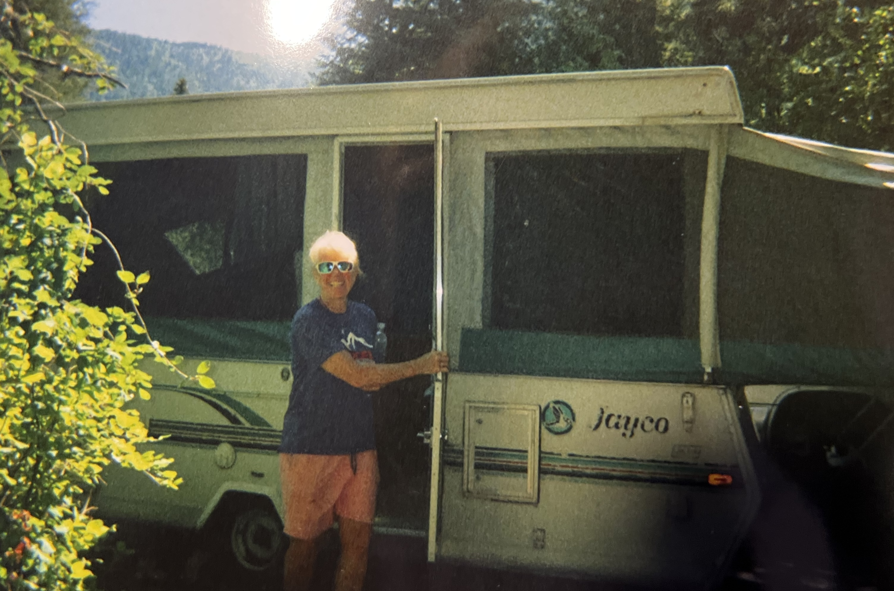

 Hello! My name us Sue Kitchel and this is the website for my business. This page is to just tell you a little something about myself so you can better know the person that you are hiring. I was born in ohio, but was raiised in Chicago, in a little suburb called Downers Grove. I moved to Boulder, Colorado to attend the University of Colorado. I very quicklu discovered that this wasn't for me, and dropped out to spend the days working and the afternoons on vail tearing up some powder. After a couple years of living life to the fullest, I decided I knew what I wanted to do with my life, so I moved out here to Pullman where I got my education at Washington State University (WSU).
After graduating with a 4.0 GPA, I took a job in Moscow, Idaho at a local vet clinic and worked there as my kids grew up. Once my first kids were out of the house, I left the Animal Clinic and started this mobile vet business!